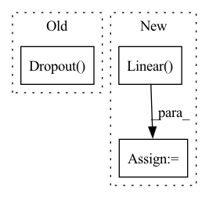

Pattern ID :27703
Before Change
self.to_k = nn.Linear(dim, qk_dim, bias=False)
self.to_v = nn.Linear(dim, v_dim, bias=False)
self.dropout = nn.Dropout( dropout)
self.attn_fn = F.softmax
self.to_out = nn.Linear(v_dim, dim)
@typecheckedAfter Change
if use_previous_attention:
// If we use the attention pattern from the last attention layer, we don"t need queries and keys
self.to_v = nn.Linear( dim, v_dim, bias=False)
else:
// Standard attention layer that will calculate the attention pattern from queries and keys
self.to_q = nn.Linear(dim, qk_dim, bias=False)In pattern: SUPERPATTERN
Frequency: 3
Non-data size: 3
Instances Fragment ID: 82188928
Project Name: antofuller/configaformers
Commit Name: f2fa8c59ce1537b400a3288f9c556e84ca993807
Time: 2021-09-04
Author: afuller187187@gmail.com
File Name: building_blocks.py
M Class Name: Attention
N Class Name: Attention
M Method Name: __init__(4)
N Method Name: __init__(6)
M Parent Class: nn.Module
N Parent Class: nn.Module
M File Name: building_blocks.py
N File Name: building_blocks.py
M Start Line: 124
M End Line: 149
N Start Line: 301
N End Line: 313
Before Change
self.master_node = args.master_node
self.master_dim = args.master_dim
self.dropout_layer = nn.Dropout(p=self.dropout)
self.W_i = nn.Linear(get_atom_fdim(args) + get_bond_fdim(args), args.hidden_size, bias=False)
if self.message_attention:
self.num_heads = args.message_attention_heads
self.W_h = nn.Linear(self.num_heads*args.hidden_size, args.hidden_size, bias=False)After Change
if self.deepset:
self.W_s2s_a = nn.Linear(args.hidden_size, args.hidden_size, bias=self.bias)
self.W_s2s_b = nn.Linear( args.hidden_size, args.hidden_size, bias=self.bias)
if self.attention:
self.W_a = nn.Linear(args.hidden_size, args.hidden_size, bias=self.bias)
self.W_b = nn.Linear(args.hidden_size, args.hidden_size) Fragment ID: 82188926
Project Name: aamini/chemprop
Commit Name: ddcdae2edb70f359d1d98863532cfe51709b1391
Time: 2018-09-30
Author: swansonk.14@gmail.com
File Name: mpn.py
M Class Name: MPN
N Class Name: MPN
M Method Name: __init__(2)
N Method Name: __init__(2)
M Parent Class: nn.Module
N Parent Class: nn.Module
M File Name: mpn.py
N File Name: mpn.py
M Start Line: 275
M End Line: 301
N Start Line: 272
N End Line: 313
Before Change
// Final convolution is initialized differently form the rest
final_conv = nn.Conv2d(512, self.num_classes, kernel_size=1)
self.classifier = nn.Sequential(
nn.Dropout(p=0.5) ,
final_conv,
nn.ReLU(inplace=True),
nn.AdaptiveAvgPool2d(1)After Change
self.global_avgpool = nn.AdaptiveAvgPool2d(1)
self.fc = self._construct_fc_layer(fc_dims, 512, dropout_p)
self.classifier = nn.Linear( self.feature_dim, num_classes)
self._init_params()
def _construct_fc_layer(self, fc_dims, input_dim, dropout_p=None): Fragment ID: 82188922
Project Name: vlsomers/bpbreid
Commit Name: 3ddf9ce6998e6a5d2052aba4286b8b899e03149e
Time: 2018-10-27
Author: k.zhou@qmul.ac.uk
File Name: torchreid/models/squeezenet.py
M Class Name: SqueezeNet
N Class Name: SqueezeNet
M Method Name: __init__(6)
N Method Name: __init__(4)
M Parent Class: nn.Module
N Parent Class: nn.Module
M File Name: torchreid/models/squeezenet.py
N File Name: torchreid/models/squeezenet.py
M Start Line: 62
M End Line: 113
N Start Line: 56
N End Line: 102